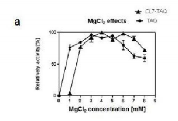

一、CL7-Taq表达质粒的构建
（详情见元件）
二、CL7-Taq蛋白质的表达与纯化
分别将Taq和CL7-Taq的表达载体转化到大肠杆菌BL21感受态细胞中，用IPTG诱导蛋白质表达后，利用Ni柱亲和纯化的方法得到条带单一的蛋白，纯化结果如下图：
注：
M：蛋白质Marker；
泳道1：破菌上清；
泳道2： 70°C热处理20 min；
泳道 3：镣柱纯化后的蛋白质样品。
Taq蛋白质的大小为93kDa左右，CL7-Taq蛋白质的大小为108 kDa左右，经过70°C热处理20 mm后还有少量的杂蛋白质，最后用镣柱亲和纯化得到条带较单一的蛋白质， 用超滤管对其进行浓缩，并将缓冲体系换成TaqDNA聚合酶的储存缓冲液。通过酶标仪在595nm下分别检测两组的OD值，根据Taq酶活标准曲线测得Taq酶的浓度为2.0937mg/mL，CL7-Taq酶的浓度为3.3647mg/mL。
三、PCR反应条件的优化
为了探究CL7-Taq对PCR反应条件进行优化，我们分析了不同离子浓度对PCR的影响。分 别在0-9 mM的MgCl2, 10-100 mM的KCl, 10-80 mM的(NH4)2SO4 以及pH值7.0-9.0 的反应缓冲液中，测定了两种聚合酶的活性。用EvaEZ荧光聚合酶活性测定试剂 盒绘制TaqDNA聚合酶的酶活标准曲线，在荧光定量PCR仪上，60°C恒温单链延伸反应来检测Taq DNA聚合酶和CL7-Taq DNA聚合酶的荧光信号，利用荧光信号的变化率带入公式计算相对酶活。在不同浓度的Mg2+, K+, (NH4)2SO4盐离子和pH值的PCR反应缓冲液中，分别测定Taq和CL7-Taq DNA聚合酶的活性，结果如图：

注：
a：MgCl2浓度变化对酶活的影响；
b：KCl浓度变化对酶活的影响；
c： ph值变化对酶活的影响；
d： (NH4)2SO4浓度变化对酶活的影响
注：
M：DL2000DNA Marker；
10-50：10-50 mM的(NH4)2SO4
如图2(a)所示，Mg2+浓度对Taq和CL7-TaqDNA聚合酶活性影响较大，尤其 是CL7-Taq DNA聚合酶对Mg2+浓度要求较高，反应体系中至少要有2 mM的 Mg2+,在3-8 mM的Mg2+浓度范围内，CL7-Taq DNA聚合酶的活性较高；在1 mM 的Mg2+反应缓冲液中Taq DNA聚合酶的活性达到最高，因此，最适Mg2+浓度为1-6 mM.
如图2(b)所示，随着K+浓度的增加，聚合酶的活性逐渐下降，当反应体 系中KC1浓度超过70 mM时Taq DNA聚合酶活性被完全抑制，CL7-Taq DNA聚合 酶最高可以耐受80 mM KCL此外，用不同pH值的反应缓冲液来探索聚合酶活性 与pH值之间的关系，选用pH值在7.0-9.0范围内的反应缓冲液，经过荧光定量PCR 检测酶的相对活性。结果如图2(c)所示，在pH 8.0的条件下，两种聚合酶的酶活 都达到最高值，其中CL7-TaqDNA聚合酶在pH值为9.0时，仍具有较高的活性， 而Taq DNA聚合酶的相对活性低于50%。故CL7-Taq比Taq DNA聚合酶对溶液pH、 Mg2+和K+的适用浓度范围更广。
检测NH4+盐离子对酶活的影响，如图2(d)所示，Taq DNA聚合酶和CL7-Taq DNA聚合酶活性也受(NH4)2SO4盐离子的影响，随着盐离子浓度升高，酶活也受 到一定的抑制作用。如图3所示，若反应体系中的(NH4)2SO4超过30 mM,则Taq DNA聚合酶的活性就会完全受到抑制,CL7-Taq DNA聚合酶最高可以耐受40 mM (NH4)2SO4。因此，CL7蛋白与Taq DNA聚合酶的融合表达可以有效地增强其对 PCR反应体系中盐离子的耐受性。
综上所述，CL7-Taq DNA聚合酶的最适PCR反应缓冲液为20 mM Tris-HCl(pH8.0), 5 mM MgCl2, 10 mM (NH4)2SO4和20 mM KCl。Taq DNA聚合酶的最适 PCR 反应缓冲液为 20 mM Tris-HCl(pH8.0), 2 mM MgCl2, 10 mM (NH4)2SO4和10mM KCl。后续实验分别在两种酶的最适反应条件下进行。
四、CL7-Taq DNA聚合酶的热稳定性分析
为了研究Taq DNA聚合酶和CL7-Taq DNA聚合酶的耐热性，本实验分别用1 U/μL的CL7-Taq DNA聚合酶和Taq DNA聚合酶在99°C下加热10、20、30、40、50、60 min和95°C下加热1、2、3、4、5h。在最适反应条件下，用相同的酶量扩增445 bp的靶基因,Taq DNA聚合酶和CL7-Taq DNA聚合酶的热稳定性通过检测在95°C或 99°C加热不同时间后的酶活来表现，如图4(a)所示，CL7-Taq DNA聚合酶的热稳定性明显优于Taq DNA聚合酶。因此，Cl7蛋白与Taq DNA聚合酶和Cl7-Taq下的热稳定性分别为40 min和50 min。如图4(b)所示，在95°C热处理后，Taq DNA 聚合酶和CL7-TaqDNA聚合酶分别在2h和3h后完全失去活性。因此，CL7蛋白 与TaqDNA聚合酶融合后酶的热稳定性有显著提高。
注：
M： DL2000 DNAMarker；
a： 99°C热处理 0-60 min；
b： 95°C热处理 0-4h
五、CL7-TaqDNA聚合酶的扩增速率检测
为了检测Taq DNA聚合酶和CL7-Taq DNA聚合酶的扩增速率，参考延伸速率相关研究设计了以下实验：在相同条件下，以pET23a/dcas9质粒DNA为模板，分别用1U的CL7-Taq DNA聚合酶和Taq DNA聚合酶扩增4条大小不同 的PCR片段，大小分别为1、2、3和4 kb,同时延伸时间设定为1min,即72°C延伸60 S。PCR结果如图5所示,CL7-Taq DNA聚合酶在60秒内可以扩增4000 bp产物，即4 kb/min。而Taq DNA聚合酶1分钟只能扩增2000 bp的产物，即2 kb/min。根据上述结果可以得出结论，CL7-TaqDNA聚合酶的延伸速率比Taq DNA聚合酶更快，同时CL7蛋白与Taq DNA聚合酶的融合使酶延伸速率提高了 一倍，即扩增相同大小的DNA的片段需要更少的时间。
注：
M： 1 kb DNA Marker (generuler)；
1-4： 1-4 kb 的 PCR 产物
六、CL7-Taq DNA聚合酶对模板敏感度的检测
为了检测DNA聚合酶对模板的敏感度或与模板的亲和力，将模板进行了一系列的梯度稀释。PCR反应体系包括模板pET23a-gfp质粒，dNTP , 一对 GFP-F/GFP-R引物，以及1U的CL7-Taq DNA 聚合酶或Taq DNA聚合酶。PCR产物的大小为445 bp。将模板pET23a-gfp质粒起始浓度10 ng/μL (1×1010 aM)连续10倍梯度稀释至终浓度为1×107 ng/μL (1×103 aM)，同时扩增每个浓度梯度的模板，PCR反应程序包括在95°C下进行预变性3 min,然后在95°C下变性15 s,在60°C 下退火15 s,在72°C下延伸30 s这个过程重复35个循环。
结果如图6所示，CL7-TaqDNA聚合酶最低可以检测到1×10-7 ng/μL (1×103 aM)的模板，而TaqDNA聚合酶最低可以检测到1×10-5 ng/μL (1×105 aM)的模 板，因此，重组CL7-Taq DNA聚合酶灵敏度更高，相对于野生型的Taq DNA聚合酶，CL7-TaqDNA聚合酶对模板的灵敏度提高了 100倍。这一酶学性质的改善有 利于CL7-Taq DNA聚合酶在酶学检验领域更广泛的应用，同时也为医学检验提供了一种高效的工具酶。
注：
M： DL2000DNAMarker；
a：模板梯度稀释后PCR结果；
b：模板梯度稀释后qPCR结果
七、CL7-Taq DNA聚合酶对抑制剂耐受性的检测
为了比较CL7-Taq DNA聚合酶和Taq DNA聚合酶对常见抑制剂的耐受性，本研究选用了肝素、乳铁 蛋白和血液这三种抑制剂。首先将这三种抑制剂分别稀释至不同浓度，将肝素稀释至0、1、2、4、6、8、10、12、14、16 μg/μL,乳铁蛋白稀释至0、0.5、1.0、1.5、2.0、2.5、3.0、3.5、4.0 μg/μL,血液含量分别为0、2、4、6、8、10%，然后对CL7-Taq DNA聚合酶和Taq DNA聚合酶在不同浓度抑制剂下的催化活性进 行了比较，将人类细胞基因组DNA作为模板，设计了引物HG-F和HG-R来检测 P-actin基因。PCR产物的大小为653 bp,用1%琼脂糖凝胶对扩增片段进行凝胶电泳并用溴化乙淀染色。实验如图7(a)所示，CL7-Taq DNA聚合酶对肝素的耐受 最高可达到14μg/μL,而Taq DNA聚合酶对肝素的耐受只有6μg/μL。如图3.8(b) 所示，融合的CL7-TaqDNA聚合酶对乳铁蛋白的耐受性是3.5μg/μL,而TaqDNA 聚合酶最高耐受浓度为2μg/μL。如图7(c)所示，CL7-Taq DNA聚合酶对血液的耐受为4%,而TaqDNA聚合酶对血液耐受几乎为零。综上所述，融合CL7蛋白的综上所述，融合CL7蛋白的Taq DNA聚合酶对常见的PCR抑制剂的耐受性显著提高。对血液PCR的耐受性的 提高有利于该酶在医学检验上的应用，即不需要对血液进行预处理提取DNA, 可以直接用血液进行PCR,不仅节省了时间，而且还节省了成本，使得CL7-Taq DNA聚合酶在酶学检验领域有着更广阔的应用前景。
注：
M： DL2000 DNAMarker；
a：不同浓度的肝素对酶活的影响；
b：不同浓度的乳铁蛋白对酶活的影响；
c： 0-10%的血液对酶活的影响